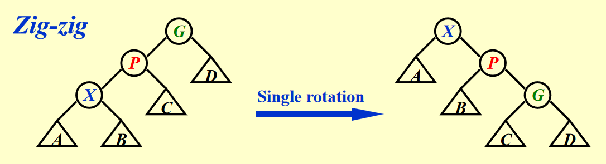

Lec 1: AVL Tress, Splay Trees and Amortized Analysis⚓︎
约 3867 个字 110 行代码 预计阅读时间 21 分钟
阅读前须知
课上听得云里雾里的，光看 PPT 很难理解 AVL 树等知识。所以我主要参考修佬的笔记以及课本（PPT 给出的 Reference
肯定有些地方是没理解到位或者表述错误的，请狠狠地指出来 ~
提醒
不论是 AVL 树，还是 Splay 树，它们的原型还是二叉查找树，具备二叉查找树的所有性质。
AVL Trees⚓︎
引入
在 FDS 的学习中，我们知道：如果对一棵二叉查找树进行多次增删操作，有可能破坏二叉树的平衡性，从而降低查找效率。最糟糕的情况是将一组节点按照升 / 降序插入，这样的话二叉树就会退化成一个链表，时间复杂度相应地从 \(O(\log N)\) 降到 \(O(N)\)。
为了提升二叉查找树的查找效率，我们需要保证整棵树的平衡性，AVL 树便是其中一种不错的解决之道。
定义
空的二叉树被认为是平衡的。如果树 \(T\) 有左右子树 \(T_L\) 和 \(T_R\)，那么满足下列条件的树 \(T\) 才是平衡的：
- \(T_L\) 和 \(T_R\) 是平衡的
- \(|h_L - h_R| \le 1\)，其中 \(h_L\) 和 \(h_R\) 分别是 \(T_L\) 和 \(T_R\) 的高度
AVL 树的每个节点都有一个平衡因子(balance factor) \(BF(node) = h_L - h_R\)。根据上面的定义知，它的取值仅有 -1, 0 或 1。
AVL 树的高度
一棵高度为 \(h\) 的最小节点的平衡树应该长这个样子：
由 AVL 树的定义，不难得出关于 AVL 的最小节点数 \(n_h\) 和树高 \(h\) 相关的递推关系式（与斐波那契数列很像
事实上，\(n_h = F_{h + 3} - 1(h \ge -1)\)。而斐波那契数 \(F_h \approx \dfrac{1}{\sqrt{5}}(\dfrac{1 + \sqrt{5}}{2})^i\)，所以：
因而高度 \(h = O(\log n)\)
AVL 树的核心操作在于：每次插入或删除一个节点之后，都要检查一下这次操作是否会破坏原来二叉树的平衡性，
- 如果没有被破坏，那么就 OK 了
- 如果被破坏了：
- 先找到离被操作节点（被称为 trouble maker）最近（或者说最深的）的 \(|BF(tf)| > 1\) 的节点 tf（也就是 trouble finder）
- 然后通过「旋转」(rotate) 的方法，将其旋转到合适的位置，使得以 tf 为根节点的子树是一棵合法的 AVL 树
注
如果有多个 trouble finder，我们只要关注那个离 trouble maker 最近的节点即可，因为只要当以它为根节点的子树恢复为一棵 AVL 树，以它的祖先节点为根节点的树自然也变回 AVL 树。
旋转的具体操作与插入节点 (trouble maker) 的位置有密切的关系，共分为四种情况：
- LL：插入的位置位于 trouble finder 的左孩子的左子树上
- RR：插入的位置位于 trouble finder 的右孩子的右子树上
- LR：插入的位置位于 trouble finder 的左孩子的右子树上
- RL：插入的位置位于 trouble finder 的右孩子的左子树上
其中前两种情况和后两种情况分别是镜像对称的，也就是说本质上只有两种不同的旋转方法需要讨论，其中前两种的方法被称为「单旋」(single rotation)，后两种的方法被称为「双旋
LL & RR⚓︎
先分析 LL：
过程演示


可以看到，trouble maker（用红色阴影标记，因为不清楚其具体的位置，但它一定在整棵树最深的位置上）在 trouble finder（用橙色标出）的左孩子的左子树上。
注：图画的稍微有点问题：右子树应当和左孩子的右子树高度一致，但这里画的有点不准，请见谅！


如何实现「旋转
- 从初始状态中可以看出，trouble finder 的左孩子的左子树太高了，而 trouble finder 的右子树较矮，因此我们希望“降低”左边的高度，而“提高”右边的高度
- 所以，选择 trouble finder 的左孩子作为新树的根节点（用橙色阴影标出，以下称为 NR
） ，而 trouble finder 则成为它的右孩子 - 而 NR 原来的右孩子则由 trouble finder 接管，成为它的左子树（红色实线表示删除的边，绿色虚线表示新增的边）
- 如图蓝色箭头所示，为了让新树更加美观，应当将 trouble finder “左旋” 下来，但保持这些节点或子树的相对水平位置不变（这样维持了二叉查找树的性质）


PPT 给出的左旋示意图
有了上面的图示，理解起来应该不算困难。所以 RR 部分的演示我就省略了（其实是我懒得画了 x

一句话总结：LL 用左旋，RR 用右旋。
LR & RL⚓︎
这两种情况稍微复杂一些，因为仅靠一次旋转是无法恢复树的平衡的，需要转两次（double rotation）才能成功。而且双旋需要关注三个节点（trouble finder、带 trouble maker 的孩子节点和孙子节点
过程演示
注意
第 2 步和第 4 步的蓝色箭头画反了，所以不要管那个蓝色箭头！


trouble maker 的具体位置并不重要。


首先，通过右旋交换孙子节点（黄色）和它的父亲（橙色）的位置（倒反天罡 bushi


然后，通过左旋交换原来的孙子节点（现在是子节点）与 trouble maker（红色）的位置。


来自 PPT 的 LR 过程
RL 的旋转方法与之类似，只要做一个镜像变换即可，这里也省略具体过程了，仅贴上一张 PPT 的图片：
例子
总结
个人认为只要记住两种旋转方法的具体步骤（增加 / 删除边和变换节点的父子关系）即可，不必记住旋转的方向（很容易搞混的，还是不记方向为妙
关于删除
我们就不详细讨论 AVL 树的删除了，仅仅简单讲几句：
- 先按照普通二叉查找树的删除方法进行删除
- 这一过程中子树的高度发生变化，很有可能破坏 AVL 树的平衡性，这时需要通过上面讲到的旋转方法使其再次回到平衡状态
- 但如果运气差一点的话，旋转完一次还不够，因为这可能破坏了其他子树的平衡，因此需要再次旋转，直至整棵树平衡
- 最坏的情况是从叶子结点一直旋转，直到根节点为止，时间复杂度为 \(O(\log N)\)
Implementation by Code⚓︎
节点应该存什么字段
有两种做法：存储节点的高度，或者存储节点的平衡因子 bf，它们各有优劣：
- 高度：简单、清晰；但是如果树过高，占用内存空间较大
- 平衡因子：只需要存三个值，节省内存空间；但是不太便于理解
我们现在不会遇到很高的 AVL 树，所以下面的代码实现使用前者。
代码实现（摘自教材）
#ifndef _AvlTree_H
struct AvlNode;
typedef struct AvlNode *Position;
typedef struct AvlNode *AvlTree;
AvlTree MakeEmpty(AvlTree T);
Position Find(ElementType X, AvlTree T);
Position FindMin(AvlTree T);
Position FindMax(AvlTree T);
AvlTree Insert(ElementType X, AvlTree T);
AvlTree Delete(ElementType X, AvlTree T);
ElementType Retrieve(Position P);
#endif /* _AvlTree_H */
// Place in the implementation file
struct AvlNode {
ElementType Element;
AvlTree Left;
AvlTree Right;
int Height;
}
AvlTree Insert(ElementType X, AvlTree T) {
if (T == NULL) {
// Create and return a one-node tree
T = (AvlTree)malloc(sizeof(struct AvlNode));
if (T == NULL) {
FatalError("Out of space!!!");
} else {
T->Element = X;
T->Height = 0;
T->Left = T->Right = NULL;
}
} else if (X < T->Element) {
T->Left = Insert(X, T->Left);
if (Height(T->Left) - Height(T->Right) == 2)
if (X < T->Left->Element)
T = SingleRotateWithLeft(T);
else
T = DoubleRotateWithLeft(T);
} else if (X > T->Element) {
T->Right = Insert(X, T->Right);
if (Height(T->Right) - Height(T->Left) == 2)
if (X > T->Right->Element)
T = SingleRotateWithRight(T);
else
T = DoubleRotateWithRight(T);
}
// Else X is in the tree already; we'll do nothing
T->Height = Max(Height(T->Left), Height(T->Right)) + 1;
return T;
}
static Position SingleRotateWithLeft(Position K2) {
// K2: trouble finder
// K1: the left son of K1
Position K1;
K1 = K2->Left;
K2->Left = K1->Right;
K1->Right = K2;
K2->Height = Max(Height(K2->Left), Height(K2->Right)) + 1;
K1->Height = Max(Height(K1->Left), K2->Height) + 1;
return K1;
}
static Position SingleRotateWithRight(Position K2) {
// K2: trouble finder
// K1: the right son of K1
Position K1;
K1 = K2->Right;
K2->Right = K1->Left;
K1->Left = K2;
K2->Height = Max(Height(K2->Left), Height(K2->Right)) + 1;
K1->Height = Max(Height(K1->Right), K2->Height) + 1;
return K1;
}
Splay Trees⚓︎
AVL 树的虽然能够始终保持树的平衡，但是它需要维护每一个节点的高度 / 平衡因子字段，有些麻烦。在 AVL 树的基础上发展出来的 Splay 树（伸展树）相比 AVL 树更加简单粗暴：它继承了 AVL 树的旋转操作，但是它并不维护节点的高度 / 平衡因子字段，因此它无法保障树的平衡性，然而它能够保证 \(M\) 次操作（增删查改）的均摊 (amortized) 复杂度为 \(O(M \log N)\)（在 均摊分析 一节再具体分析
Splay 树的核心操作在于：每当我们访问一个节点后，就将该节点通过 AVL 树的旋转方法将其放在根节点的位置上。
错误示范
单纯的左旋或右旋无法降低下面这棵树的复杂度（某些节点复杂度降低，但另外一些节点的复杂度增加了
如果按升序插入节点之后（树退化成链表）再按升序访问每个节点，时间复杂度为 \(O(N)\)（我们每次都要找到最底下的节点）
下面介绍正确的操作，分为 3 种情况（其中被访问的节点记作 \(X\)，它的父亲和祖父分别记作 \(P\) 和 \(G\)
- Case 1：\(P\) 是根节点 -> 旋转 \(X\) 和 \(P\) 即可（AVL 树的单旋）
-
Case 2：\(P\) 是非根节点
- Case 2-1：Zig-zag（\(X, P, G\) 三者不在一条直线上）-> \(X\) 节点转两次（AVL 树的双旋）

- Case 2-2：Zig-zig（\(X, P, G\) 三者在一条直线上）-> 先转 \(P\) 节点，后转 \(X\) 节点

Case 2-2 的过程演示


应用
教材《数据结构与算法分析》\(P_{128-131}\) 上有访问一棵 32 个节点构成的（按升序插入的，因此是一张链表）二叉树的例子，可以发现每访问一次，并将被访问的节点移到根节点上后，整棵树的高度也会渐渐降低。
注
在将被访问的节点移到根节点上之后，路径上大多数节点的高度降至原来的一半左右。
删除 Splay 树上的某个节点
- 访问要删除的节点 \(X\)，根据规则，\(X\) 将会作为整棵树的根节点
- 移除 \(X\)，这样就剩下两棵子树 \(T_L\) 或 \(T_R\)
- \(FindMax(T_L)\) 或者 \(FindMin(T_R)\)，也就是说从两棵子树中找到合适的节点，作为新树的根节点，使新树仍然保持二叉查找树的性质
Splay 树的复杂度涉及到均摊分析，下面将介绍这一知识点。
Amortized Analysis⚓︎
 我们先来理解「均摊」这个词：
我们先来理解「均摊」这个词：
- 保证在 \(N\) 个数据上的 \(M\) 次运算的总体复杂度为 \(O(M \log N)\)
- 它考虑的是全局（所有数据）的耗时，允许某些数据的运算耗时久一些，靠在另一些数据上耗时较短的运算弥补
- 区分最坏复杂度，均摊复杂度和平均复杂度
- 最坏：保证单个运算以及整体运算的复杂度不超过某一边界（边界最紧）
- 均摊：保证整体的运算复杂度不超过某一边界，但允许某几次运算可以超过该边界（考虑数据的真实情况）
- 平均：在给定数据分布平均的情况下（是一种理想的假设
） ，保证整体运算的复杂度不超过某一边界（边界最松）注：只有平均复杂度考虑数据分布，前两者并不考虑数据的分布。
通过上面的分析，不难得出以下不等关系：
worst-case bound \(\ge\) amortized-case bound \(\ge\) average-case bound
常见的均摊分析有以下几类：聚合法 (aggregate method)、核算法 (accounting method)、势能法 (potential method)。
Aggregate Method⚓︎
Idea：均摊复杂度 = 所有操作的总时间 / 操作次数，即 \(T_{amortized} = \dfrac{\sum\limits^nT_i}{n}\)
例子
对于一个栈，创建一个 MultiPop 的方法：依次弹出栈内所有的元素（如果有的话
易知 \(size(S) \le n\)（\(n\) 为数据总数
Accounting Method⚓︎
Idea：当我们的均摊成本 (amortized cost) \(\hat{c}_i\) 高于实际成本 (actual cost) \(\hat{c}_i\) 时，多出来的部分就转化为积分 (credit)。如果之后的均摊成本小于实际成本时，可以用之前攒的积分抵消实际的成本（注意：不允许“均摊成本 + 积分 < 实际成本”
其中 \(\sum\limits^n\hat{c}_i \ge \sum\limits^n\hat{c}_i\)。实际上，均摊成本是我们预先设置的值，所以在设置的时候要预估好，确保均摊总成本高于实际总成本，即积分保持非负状态。
例子
接着上面 MultiPop 的例子，假如我们的实际成本和均摊成本分别如下：
- \(c_i\)：
Push：1，Pop：1，MultiPop：min(sizeof(S), k) - \(\hat{c}_i\)：
Push：2，Pop：0，MultiPop：0
我们可以这样理解：每次 Push 一个元素的时候，我们用两块钱执行这个只需一块钱的操作，多出来的一块钱存起来作为积分。这样的话，当我们 Pop 一个元素的时候，就不需要花钱，只要花费等价的积分即可。通过上面给出的信息不难判断，每当 Pop 一个元素的时候，我们都会有足够多的积分来消费，所以 MultiPop 的运算我们可以不花一分钱就可以完成。
用符号语言表述：
Potential Method⚓︎
Idea：我们将核算法提到的「积分」概念转化为「势能差」概念——即 \(\hat{c}_i - c_i = \Phi(D_i) - \Phi(D_{i-1})\)，其中 \(D_i\) 表示经历了 i 次运算后的数据结构，\(\Phi(D_i)\) 表示该数据结构的势能函数(potential function)。经过一些转化，可以得到：
由此看出，我们要确保始末势能差 \(\Phi(D_n) - \Phi(D_0) \ge 0\)，因此需要设计一个合理的势能函数。
例子
还是接着 MultiPop 的例子，我们假定 \(D_i\) 为经过 i 次操作后的栈，\(\Phi(D_i)\) 表示栈的元素个数，那么易知 \(\Phi(D_i) \ge 0 = \Phi(D_0)\)。
-
Push：\(\Phi(D_i) - \Phi(D_{i-1}) = (sizeof(S) + 1) - sizeof(S) = 1\) \(\Rightarrow \hat{c}_i = c_i + \Phi(D_i) - \Phi(D_{i-1}) = 1 + 1 = 2\) -
Pop：\(\Phi(D_i) - \Phi(D_{i-1}) = (sizeof(S) - 1) - sizeof(S) = -1\) \(\Rightarrow \hat{c}_i = c_i + \Phi(D_i) - \Phi(D_{i-1}) = 1 - 1 = 0\) -
MultiPop：\(\Phi(D_i) - \Phi(D_{i-1}) = (sizeof(S) - k') - sizeof(S) = -k'\) \(\Rightarrow \hat{c}_i = c_i + \Phi(D_i) - \Phi(D_{i-1}) = k' - k' = 0\)
\(\therefore \sum\limits_{i = 1}^n\hat{c}_i = \sum\limits_{i = 1}^nO(1) = O(n) \ge \sum\limits_{i=1}^nc_i \Rightarrow T_{amortized} = \dfrac{O(n)}{n} = 1\)
Analysis for Splay Tree⚓︎
结论：Splay 树的均摊复杂度为 \(T_{amortized} = O(\log N)\)
下面我们用势能法来进行势能分析。
注意
我的理解不一定准确（写到后面大脑都快炸开了）所以若分析出现问题的话，可以在下面的评论区留言指出 ~
分析
我们假定：
- \(D_i\) = 以被访问的节点为根节点（经过变换后）的新树
- \(c_i\) = 转换过程中所需的实际成本
- zig：\(c_i = 1\)
- zig-zag & zig-zig：\(c_i = 2\)
-
\(\Phi(T) = \sum\limits_{i \in T} \log S(i) = \sum\limits_{i \in T} R(i)\)，其中 \(i\) 是 \(T\) 的后代，\(S(i)\) 是以 \(i\) 为根节点的子树的大小，将其取对数就是 \(i\) 的秩(rank) \(R(i)\)
-
\(R(i) \approx H(i)\)（\(H(i)\) 为树的高度）
为什么不用树的高度作为势能函数
因为很多子树的高度在旋转的时候会发生改变，而大小在旋转的过程中虽然也有不小的变化，但是由于取了对数，所以秩的变化就变得很小了，这便于我们的计算。
下面我们就具体分析 Splay 树的三种情况：
- 显然，在旋转前后，以 \(P\) 为根节点的子树的大小变小了，因此 \(R_2(P) - R_1(P) < 0\)
引理
如果 \(a + b \le c\)，且 \(a, b\) 都是正整数，则
证明：
- 根据算术 - 几何不等式 \(\sqrt{ab} \le \dfrac{a+b}{2}\)
- 因此 \(\sqrt{ab} \le \dfrac{c}{2}\)
- 两边平方： \(ab \le \dfrac{c^2}{4}\)
- 再两边取对数，得到上述引理
- 旋转前 \(G\) 的大小和旋转后 \(X\) 的大小相等，所以 \(R_2(X) = R_1(P)\)，可以相互抵消
- 旋转后，\(S(X) \ge S(P) + S(G)\)，根据上面的引理知，\(\log S(P) + \log S(G) \le 2 \log S(X) - 2\)，即 \(R_2(P) + R_2(G)\le 2 R_2(X) - 2\)
- 旋转前，\(P\) 是 \(X\) 的父节点，因此 \(R_1(P) \ge R_1(P)\)
- 通过上述的转换和抵消，可以得到最终的不等式
错误示范
用和推导 zig-zag 类似的方法放缩不等式，可以得到下面的结果：
从放缩的角度看挺不错的，但是后面多出了个常数 2，而我们不知道要执行多少次 zig-zig 旋转操作，所以会带来不确定的数据，这不利于我们的精确分析。
上面的 zig 旋转可以带常数，是因为只有一次 zig 操作（很容易验证
） 。
- 旋转后的 X 的大小 = 旋转前的 G 的大小，所以两者对应的秩相抵消
- 观察旋转前的 X 子树和旋转后的 G 子树，不难发现它们加起来的大小 \(\le\) 旋转后的 X 树的大小，所以再次用到上面的引理，可以得到 \(R_2(G) + R_1(X) \le 2R_2(X) - 2\)
- \(R_2(P) \le R_2(X), R_1(P) \ge R_1(X)\)，所以最后部分进行简单的放缩
- 最终我们得到了正确的不等式
结论
最后，我们将这三部分并起来，得到最终的均摊成本。但在此之前，我们需要进一步的放缩，便于后续计算：
将所有旋转操作对应的均摊成本加起来：
这样，我们成功证明了 Splay 树的均摊复杂度。
评论区